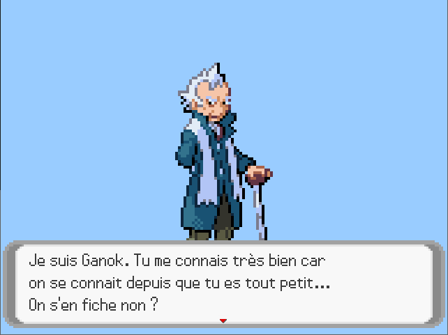
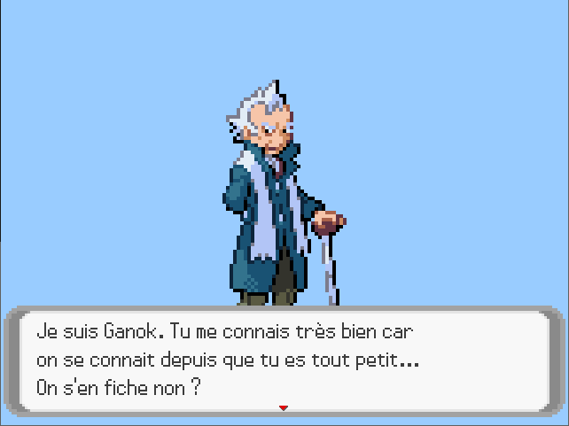
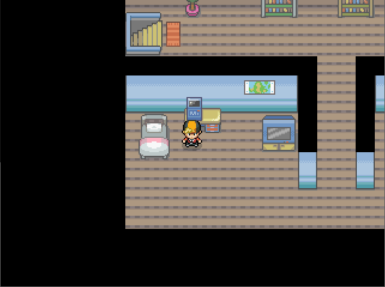
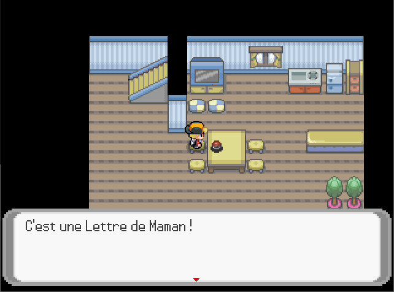

Guides
De Bourg-Joie jusqu'au premier badge
Introduction
Bienvenue dans le monde merveilleux des Pokémon. Le jeu commence avec le professeur Ganok qui se présente et vous demande votre nom, si vous êtes un garçon ou une fille.


Bourg-Joie
Vous êtes dans votre chambre et dans votre cuisine est déposé une lettre de votre mère qui est parti en vacances quelques temps.


Rendez-vous dehors et partez chez le professeur Ganok. Il vous informera qu'il a fait une découverte sur vos fossile et vous indiquera d'aller chercher Zakam.
Rendez-vous dehors et partez chez le professeur Ganok. Il vous informera qu'il a fait une découverte sur vos fossile et vous indiquera d'aller chercher Zakam.